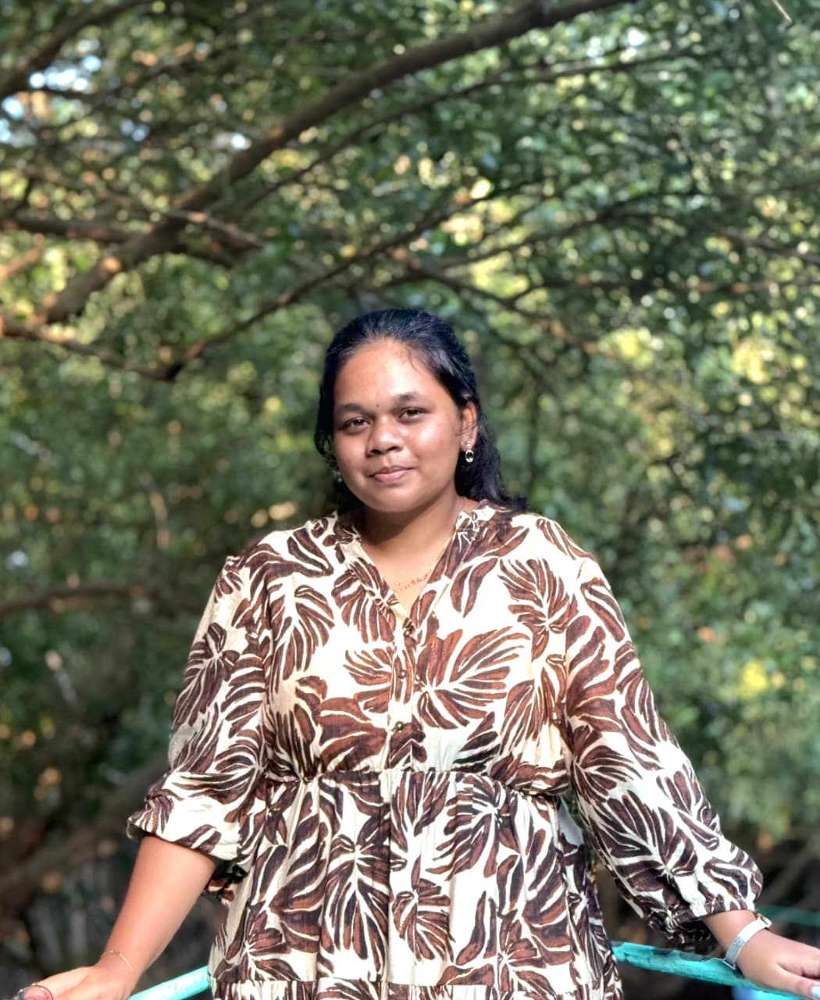

I’m passionate about Frontend Development and enjoy creating modern, responsive, and user-friendly websites with clean designs and smooth user experiences.
Along with frontend development, I also have knowledge in Full Stack Development and Software Development concepts, which helps me understand how complete web applications work from both frontend and backend perspectives.
I love learning new technologies, improving my coding skills, and building creative projects that solve real-world problems.
Apart from coding, I enjoy photography and capturing beautiful moments and nature. In my free time, I like exploring new design ideas, watching tech content, listening to music, and continuously learning something new to improve myself both personally and professionally.